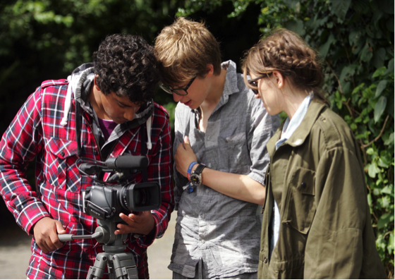
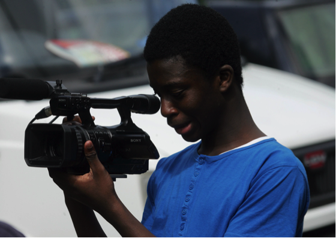

TRAINING FOR 13-19 YEAR OLDS
We also raised funds for longer productions with a range of new partners. This funding allowed us to bring in industry tutors and increase young people’s skills, knowledge and experience.
St John's Organ Restoration Project
We also raised funds for longer productions with a range of new partners. This funding allowed us to bring in industry tutors and increase young people’s skills, knowledge and experience.

St John's Church, Notting Hill received Heritage Lottery funding towards the restoration of the church's 18th century organ.

19 young people with The Video College made a short film that documents the long and intricate process of restoring the organ. This included a 2 day shoot at the organ restorer's, TW Fearn, in Gittisham Devon, where they filmed the detailed work of its experts.
Home Roots from The Video College on Vimeo.
Little Morocco from The Video College on Vimeo.
St John's Organ Project from The Video College on Vimeo.
OUT OF SCHOOL LEARNING